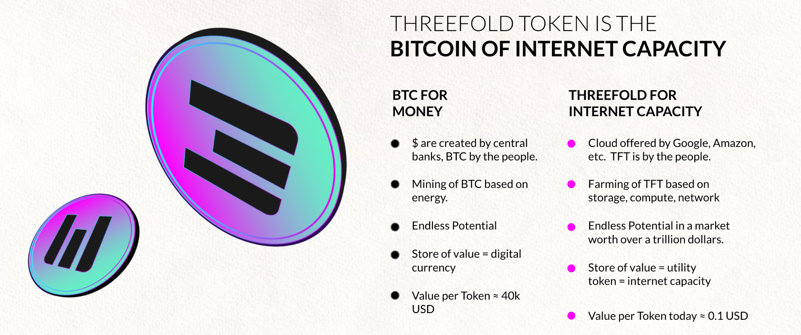

TFT Utilization Model

The following 5 mechanism provide for TFT Utilization (drives scarcity)
- Regional Internets: staking of TFT to establish the 99 validators per Daughter DAI* (many billions of TFT)*
- Neighborhood Clouds buy back more tokens over the next few years. We expect to have +50m USD buying power over the next 24 months. It might well be impossible to spend this budget, because there is a possibility that there will not be enough tokens liquid to buy them as part of Neighborhood Clouds projects.
- CHI genesis pool + CHI based personal liquidity pool (many billions of TFT)
- ThreeFold Grid Usage, TFT is needed and also will get tokens to be burned. Digital Twins: Millions of people will need their ThreeFold Keys (or Uhuru Keys) (already in phasee 3)
1. Staking requirement for Regional Internet
Each Regional Internet (Daughter DAI) is created by up-to 99 people deploying blockchain validator nodes. Each validator node needs about 50k USD worth of TFT staked. We are repeating this hundreds of times. This leads to +10.000 validators.
Once the blockchain validator nodes have enough funding then they secure the regional internet which provides completely independent Internet experience for millions of users. This allows for Community/Neighborhood Clouds to be established.
2. Neighborhood Clouds Buyback TFT from Market
A Neighborhood Cloud is a special type of Community Cloud project where a special purpose vehicle receives 1-5% of a real estate project. This 1-5% is used to farm TFT in and around the project as well as acquire tokens from the market if the price is low enough. The homeowner receives a certain amount of TFT over 5 years. Example in our first project, TFTech receives 5m USD, and the home owners receive 7 TFT per USD. This is a win-win for everyone involved. As a result the real estate project has their own internet with all the features required for the digital life of its citizens.
About 20% of every Neighborhood Cloud proceeds is used to buy tokens from the market (if still possible at that time). Each Neighborhood Cloud has their price of TFT at start defined (we call it strike price) e.g. today we sold at about 0.1 over 5 Y, next deal 0.12, … If tokens today are < 0.12 we buy all tokens we can till 0.12, this way each Neighborhood Cloud project defines a next price for the token… It's a gradual token price increase in line to expansion of the grid and a bigger economical ecosystem.
There are now 2 projects
- Paradise Hills -> 5m USD (signed)
- A new project in Dubai -> 8-10m USD (to sign < 4 weeks)
There is a large funnel, we expect to book more than 50m USD this year, this means +- 10m USD can be used over next year or so to buy back TFT as long as the price is lower than the strike price of the Neighborhood Cloud.
This shows how the Neighborhood Cloud concept has the potential to keep on supporting the TFT price in an organic way and this way provides benefit for the local community as well as the ThreeFold community in general.
3. CHI Liquidity Pools
Each Daughter DAI has its own colored TFT and DEFI system. **This local TFT is also called CHI **and can only be used inside the Daughter DAI ecosystem. A CHI is generated as a result of people providing storage, network and compute resources to their local Daughter DAI system. CHI farming rules are defined by the local DAI and will be different region to region. Each Daughter DAI starts with 99,999,999 of genesis CHI which need to be bought from the Mother DAI by means of TFT. These genesis CHI are managed by the Daughter DAI and can be granted for work done or funds provided by the community.
The DEFI system uses CHI as reserve currency, all trades in the peer2peer system are done against CHI. CHI is for Threefold what BNB is for Binance Smartchain. If you need CHI from another DAI you will have to go over TFT which is the reserve currency of the ThreeFold Mother DAI. This happens seamlessly for you, as part of your Twin For Life experience.
Everyone, by design, has the right and ability to become a liquidity provider. It won’t be like any centralized exchange platform. Instead it will be an organic experience attached to your digital self which allows you to create flow. Each and every one of us can decide how to provide liquidity and flow on a personal level – which allows for a self-governing system to emerge.
Each Twin For Life has its own set of Liquidity Pools.
You define per personal liquidity pool
- Amount digital currencies available to the pool (e.g. 1000 USDT, 0.2 BTC …).
- Amount of CHI or TFT available is the reserve currency (you can use TFT and CHI as reserve currency).
- Your liquidity pool Exchange Rules, assets you want to exchange and at what price
- e.g. buy max 100,000 TFT < 0.15 USD, optionally linked to a specific group of people (we call circle)
- e.g. sell max 10,000 TFT > 0.2 USD
Your liquidity pool will at any point in time have a basket of your digital currencies and TFT/CHI. Important remark, you can use any currency in your ruleset, but exchange always happens against TFT or CHI. TFT or CHI is the reserve currency. Importantly, a pool always needs at least 30% of its value in CHI/TFT, otherwise the pool will not function, this makes sure there is enough liquidity available.
More currencies will enter this liquidity model. With time we will integrate gold, carbon and other (value-backed) utility or monetary digital currencies.
The aggregation of the above individual pools will aggregate themselves to balance the whole economy – a peer-to-peer alternative to centralized liquidity pools – a real economy based on real demand and supply – an economy based on the golden rule and free will. It's important for everyone to provide liquidity, this keeps the system flowing.
4. ThreeFold Grid Usage Growth
While the grid is usable today the big growth is only expected once we reach more expansion and global reach.
In the last phase ThreeFold Grid usage leads to burning of ThreeFold token (see phase 4), this is another mechanism for scarcity.